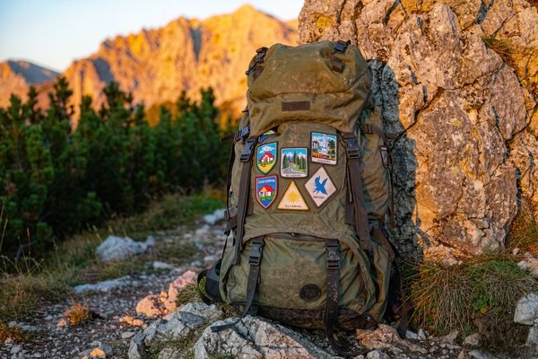
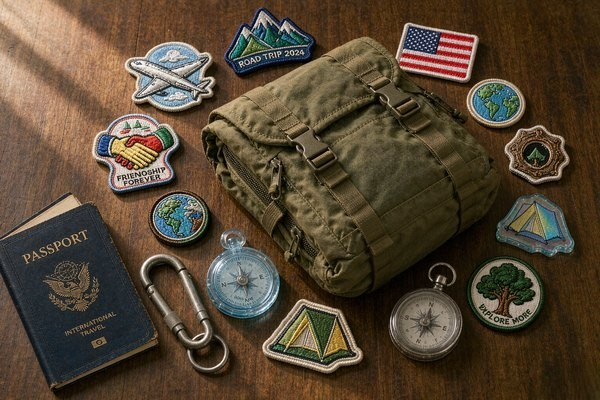
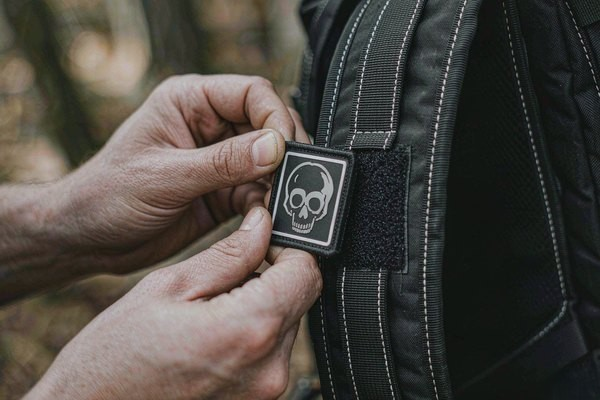

Backpack Patches: Personalize Your Gear From Trail to Terminal
A mass-produced backpack looks like everyone else's until the first patch goes on. Backpack patches are the cheapest gear upgrade there is — they mark where you have been, what you love, and which bag is yours on a crowded luggage carousel. This guide covers which patch materials survive trail weather, where to place them on straps and panels, the attachment methods that actually hold on synthetic fabrics, and how to build a collection that keeps growing.

Why Backpacks Became the Favorite Patch Canvas
Jackets personalize one outfit; a backpack travels through everything — school, commutes, airports, summits, festivals. It is the single most-viewed surface a person owns, always worn on the outside where strangers can read it. That is why gear makers ship tactical and travel packs with a blank loop panel on the strap: the manufacturer expects you to finish the design.
Patches also carry the story better than keychains or stickers. A hiking summit badge, a country flag from a semester abroad, a festival crest — each one pins a memory to the object that was actually there. And unlike stickers, patches survive rain, abrasion and airport baggage handlers, which makes them the only keepsake medium suited to gear that gets abused on purpose.
Patch Types That Live Well on Packs
- PVC patches. Rubberized, waterproof, unbothered by mud or sun — the standard for outdoor and tactical packs.
- Embroidered morale patches. The classic look for casual packs; bold crests and joke badges in two to four colors stitch up beautifully on canvas and Cordura.
- Flag and travel badges. Countries, national parks, city crests — the collection backbone that grows with every trip.
- Glow-in-dark patches. A practical accent on camping and festival packs, where finding your bag in a dark tent matters.
- Reflective patches. Bike commuters and school bags get genuine safety value from a reflective strip stitched as a design element.

Where Patches Go on a Pack
Placement on backpacks follows visibility and abrasion, in that order. The front panel is the showcase — flat, wide, always facing the world. Straps are the second-best spot, and many tactical packs arrive with loop panels sewn there for exactly this reason. The lid of a hiking pack, the sides of a duffel, and the top flap of a messenger all work; the bottom panel never does, since it takes all the wear.
Sizing follows the surface: 2–3 inches for a front panel or lid, 1.5–2 inches for a strap or side pocket. Keep patches off fold lines, zipper paths and compression-strap routes — a patch stitched across a flap seam will pop its border threads the first week. The positioning fundamentals transfer directly from garment placement — just scaled to a pack's curved panels instead of a flat jacket chest.
Attachment: The Step Where Most Patches Die
Backpack fabric is the hostile environment that kills naive attachment choices. Most packs are nylon or polyester — synthetics that scorch under a household iron, which means the iron-on habit learned from jackets needs a rethink:
| Method | On a Backpack |
|---|---|
| Sew-on | The reliable default — a few stitches through Cordura or canvas hold for the life of the pack |
| Velcro (hook backing) | Best system for tactical packs and swappable collections; pairs with sewn-on loop panels |
| Iron-on | Risky on nylon — low heat only, with a pressing cloth, or the fabric glazes; still needs stitching for durability |
| Adhesive | Do not bother — one flexed strap or rainstorm and it peels |
The full backing comparison is in our backing types guide. For most people the honest advice is simple: sew it on, or choose a pack with loop panels and collect hook-backed patches — the Velcro patches guide explains how the swap system works in detail.

Building a Collection Worth Showing
The collecting instinct is what turns gear into a diary. Travelers anchor the front panel with a home-country flag and add a destination badge per trip; hikers stack summit and trail badges by year; festival-goers keep every edition crest — the same loop that makes event patches collectible works on a pack strap. Two habits keep a collection looking intentional instead of cluttered:
- Anchor, then fill. One large centerpiece (2.5–3 inches) with smaller badges orbiting it reads as designed. Ten same-size patches in a grid reads as a stamp sheet.
- One theme per panel. Travel on the lid, humor on a strap, sports on a side pocket. Mixing themes across every surface is how bags end up looking noisy.
Shape variety helps too — a die-cut mountain between two round badges breaks the grid pleasingly, and the shape options are compared in our die-cut shapes guide.
Swap systems change the collecting rhythm entirely. On a loop-panel pack, the collection lives in a binder or patch board and rotates onto the bag by season, trip or mood — which means one purchase serves years of configuration instead of one fixed layout. Commuters swap in reflective pieces for winter; festival-goers rotate in the glow badges; hikers retire worn summit patches to a framed board instead of the trash. The patch economy on gear rewards systems over one-off attachments, because a patch that moves between packs keeps its story traveling.
Making Your Own for a Team, Club or Brand
Groups that share one pack culture — scout troops, hiking clubs, tour operators, school trips — order their own badges for the same reasons brands do: identity, morale and a keepsake that outlasts the trip. A troop crest on every member's pack survives years of campouts; a tour company's badge on customer gear turns every hiker into a billboard on the trail. Production choices mirror any patch order: PVC or embroidered for weather exposure, sew-on or hook backing for the pack surface, and no minimum order for small groups.
One design note for pack-specific orders: high-contrast borders and bold fills win, because packs live in dappled light, rain and shadow — tune the palette to outdoor fabrics rather than indoor apparel.
Frequently Asked Questions (FAQ)
Q1: Can I iron a patch onto my backpack?
Carefully, and often not at all. Most backpacks are nylon or polyester, and direct iron heat can glaze or melt the fabric. If you must, use low heat with a pressing cloth from the inside — but for a lasting hold, sew the patch on or choose a hook-and-loop system instead.
Q2: What patch material survives rain and mud best?
PVC. It is waterproof, colorfast and wipes clean, which is why tactical and outdoor brands default to it. Embroidered patches also perform well once stitched on, though they hold water longer and take time to dry.
Q3: How do I attach patches to a strap without sewing?
Use hook-backed patches on a loop panel — many tactical and travel packs include one on a strap. If your pack has no loop panel, a sewn-on loop strip converts it into a swap-friendly patch surface in one sewing session.
Q4: What size patches fit a backpack strap or panel?
Front panels and lids handle 2–3 inch patches comfortably; straps and side pockets suit 1.5–2 inches. Avoid crossing seams, zippers and compression straps — patches stitched over moving parts shed their borders quickly.
Q5: Can we order custom patches for a scout troop or hiking club?
Yes — send the logo or a sketch and we digitize it free, offer PVC or embroidered construction for weather exposure, and there is no minimum order. Troops typically order one crest per member plus spares, and reorders reuse the same digitized file.
Conclusion: Your Bag, Your Billboard
Backpack patches are the rare gear upgrade that costs almost nothing, survives everything, and gets better with every trip you take. Pick materials that match the weather you walk into, place them where the world can read them, attach them for the life of the pack instead of the life of the month, and let the collection grow one badge at a time.
Whether it is one summit badge for your own pack or a hundred crests for a troop, we digitize your design free and return a proof within 12 hours. No minimum order. Request a free quote and start your bag's collection with the patch it deserves.